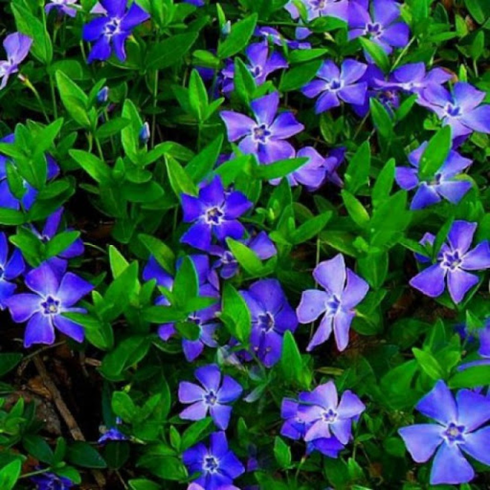

«Кущ калини біля материної хати — це не лише окраса, а й
символ України, наш духовний світ, наша спадщина. Якщо троянди й виноград,
за влучним висловом Максима Рильського, символізують красиве й корисне, то
кущ калини, увібравши обидві ознаки, опредметнює й духовний потяг до своєї
землі, свого оберега, своїх традицій».

«В українському фольклорі часто зустрічаються згадки про
всім відому рослину. Це тополя (Populus) — міфічний образ-тотем давніх
українців. Свято тополі проводили наприкінці весни. Обирали найстрункішу
дівчину, якій зав'язували над головою руки, на які навішували стрічки,
хустки,
намисто, водили селом, лугом, полем та співали: «Стояла Тополя край чистого поля,
стій, Тополенько, стій не розвивайся, буйному вітроньку не піддавайся...».
Особливо свято тополі було поширене в околицях Києва».

«Ще однією рослиною, що зустрічається у багатьох
легендах та казках українського народу, є барвінок (Vinca). Це травяниста
багаторічна рослина, яка має видовжене листя, квітки синьо-фіолетового
кольору, плід, що складається з двох вільних листків. Барвінок зацвітає в
травні-липні. Поширений барвінок в Україні, Білорусі та на Кавказі».
«У нашій країні льон висівають переважно в зоні Полісся, саме
тому його ще називають поліським шовком. Поліщуки добре знають, коли, в
яку пору краще сіяти, збирати, слати, тіпати льон, з приводу чого склалося
багато народних прикмет. Так, вважали, що сіяти льон найкраще у п'ятницю чи
суботу, несучи насіння в поле у білій скатертині».